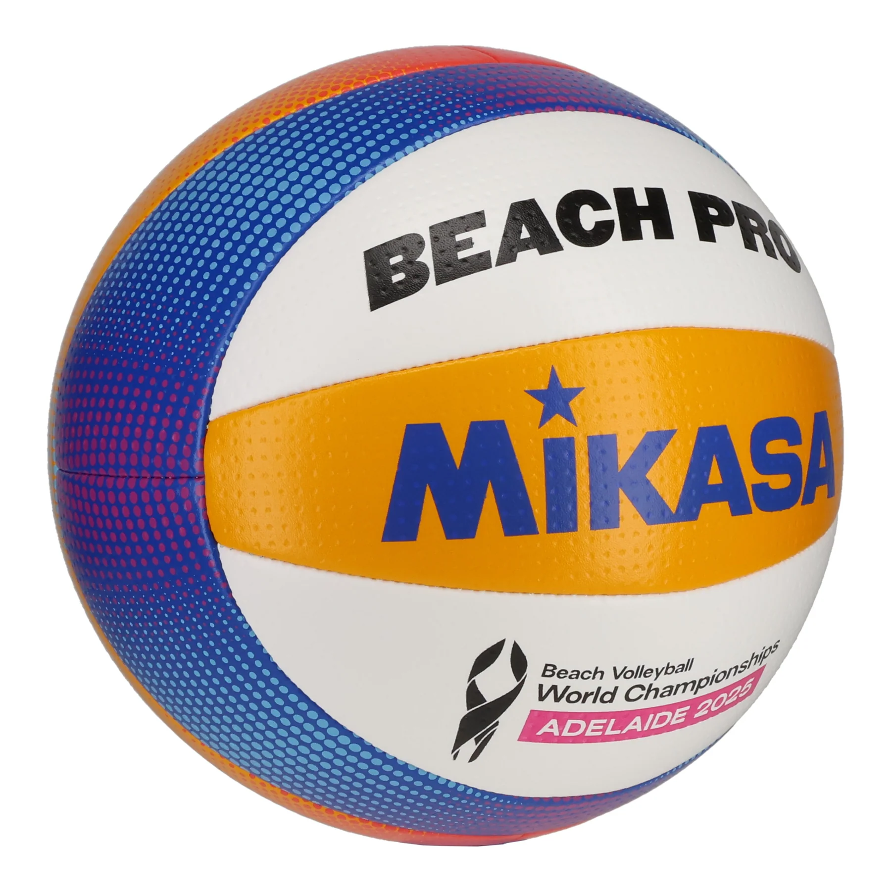

Beach balls are larger and hand-stitched to survive sand and wind conditions.

The Wilson Optx uses a specific color palette that allows players to track ball rotation against a bright sky, improving reaction time by 20% compared to white balls.